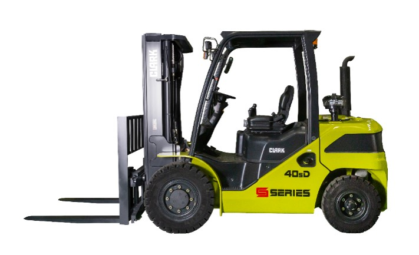
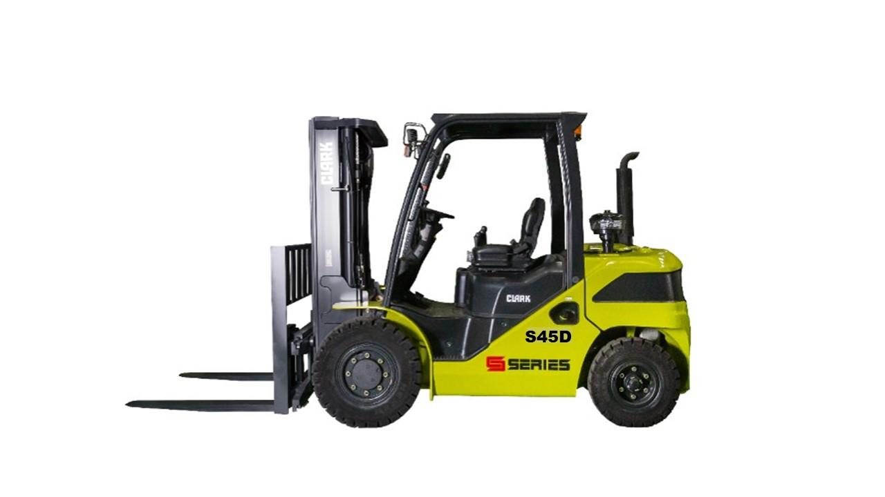

São 5 toneladas de bobinas de aço. O piso está molhado. A descida tem 8% de inclinação. O operador acelera na curva e, num equipamento comum, a carga oscila. Com a Clark S50s, o sistema CSS detecta a combinação de velocidade e peso e reduz automaticamente a velocidade antes que o risco apareça. A carga chega sem incidente. A produção não para.
Esse cenário acontece todos os dias em siderúrgicas, portos e câmaras frias. A Clark S-Series foi projetada para ele.

A Clark S-Series cobre a faixa de 4 a 6 toneladas com cinco modelos que compartilham a mesma plataforma mecânica. Motor, transmissão e freio são idênticos. O que muda é a capacidade nominal e o peso operacional.
| Modelo | Capacidade | Peso Diesel (kg) | Peso GLP (kg) | Aplicação típica |
|---|---|---|---|---|
| S40 | 4.000 kg | 5.898 | ~5.750 | Distribuição, papel e celulose |
| S45 | 4.500 kg | 6.275 | ~6.100 | Metalurgia, construção civil |
| S50s | 5.000 kg | 6.747 | ~6.570 | Siderurgia, mineração de pátio |
| S55s | 5.500 kg | 7.171 | ~7.000 | Portos, retroportos, graneleiros |
| S60 | 6.000 kg | 7.374 | ~7.200 | Câmaras frias pesadas, celulose |
A regra prática: dimensione pelo peso real da carga mais pesada do seu dia, não pela média. Se você carrega bobinas de aço de 4,8 toneladas regularmente, o S50s é o modelo correto, não o S45.

O motor Kubota V3800 é 4 cilindros, 3,8 litros, refrigerado a água. Na versão Diesel, entrega 98 HP a 2.400 rpm e 300 N.m de torque a 1.500 rpm. Na versão GLP, 87 HP e 261 N.m. A diferença de torque entre as versões importa em rampas acima de 10% de inclinação: o Diesel mantém tração onde o GLP perde força.
Kubota é uma das três maiores fabricantes de motores compactos do mundo. Distribuidores autorizados e estoque de peças estão disponíveis em todo o Brasil, incluindo Goiânia e o Centro-Oeste. Uma parada por falta de peça é menos provável aqui do que em marcas com suporte concentrado no Sul e Sudeste.
A Move Máquinas, distribuidora autorizada Clark no Centro-Oeste com mais de 20 anos de operação, especifica a versão correta de combustível para cada aplicação: Diesel para pátios externos e rampas acima de 10%, GLP para ambientes fechados. O dimensionamento é parte da proposta técnica, não um campo de formulário.
Mas o motor é só o início.
A transmissão T40 foi desenvolvida pela Clark especificamente para esta faixa de capacidade. Não é um componente de caminhão adaptado. Isso importa porque o ciclo de operação de uma empilhadeira envolve reversões contínuas, algo que transmissões de veículos de transporte não foram projetadas para suportar em frequência alta.
A reversão suave reduz o desgaste nos componentes de tração e no mástro. Em operações de alto ciclo (200+ reversões por turno), a diferença em vida útil de componentes de transmissão é estimada em 20-30% a favor da T40 versus transmissões de caminhão adaptadas.
O freio a tambor convencional exige revisão a cada 1.000 a 2.000 horas. Em operação de dois turnos (16h/dia), isso significa parada programada a cada 3 a 6 meses. Cada revisão custa entre R$ 2.500 e R$ 4.000 em mão de obra e peças.
Dez mil horas equivalem a aproximadamente 5 anos em dois turnos diários. Nesse período, uma empilhadeira com freio a tambor passa por 5 a 10 revisões de freio. O custo acumulado fica entre R$ 12.500 e R$ 40.000 — apenas em freio.
Zero manutenção de freio por 5 anos. Esse é o número.
O encapsulamento total protege o sistema em ambientes com pó de granéis, lama em pátios externos e água em câmaras frias. O freio funciona da mesma forma no primeiro dia e no décimo ano.
Quer calcular a economia de manutenção de freio para a sua frota? A Move Máquinas faz a simulação de TCO em até 1 dia útil. Solicitar simulação
O perfil estrutural do mástro define dois resultados simultâneos: resistência à torção sob carga e campo de visão do operador. A Clark S-Series usa Viga I (I-beam), o mesmo perfil de vigas de aço estrutural. O perfil plano (flat-bar), usado por concorrentes de menor custo, é 55% menos resistente sob carga lateral.
A visibilidade importa em corredores estreitos. O canal do perfil I deixa o operador ver a garfo e a carga durante toda a manobra. Com perfil plano, a estrutura bloqueia parte do campo visual em elevações acima de 3 metros.
O Clark Stability System (CSS) é um sistema eletrônico que monitora simultaneamente a velocidade de curva e o peso da carga. Quando a combinação cria risco de tombamento lateral, o CSS reduz automaticamente a velocidade antes que o operador perceba o perigo.
O resultado operacional é duplo. O operador pode manter velocidade mais alta em trechos retos e o sistema desacelera apenas nas curvas com risco real. Ciclos mais rápidos sem aumentar o risco de acidente.
Aqui é onde o custo de parada não programada entra em cena.
Um tombamento de empilhadeira com carga de 5 toneladas causa dano médio estimado em R$ 80.000 a R$ 150.000, incluindo máquina, carga, estrutura e afastamento do operador. O CSS não elimina esse risco, mas reduz significativamente a frequência dos eventos que o causam.
A Move Máquinas apresenta o funcionamento do CSS durante a proposta técnica, incluindo simulação de cenários de risco com base no layout do pátio do cliente. Para operações com rampas ou curvas críticas, esse dado entra no comparativo de custo total.
O painel digital colorido exibe em tempo real: horas de operação, nível de combustível, temperatura do motor, temperatura do fluido hidráulico e alertas de manutenção preventiva. O operador sabe exatamente quando fazer a próxima troca de óleo sem depender de anotação manual ou planilha de controle.
Em operações de dois turnos com diferentes operadores por dia, o assento regulável em 4 posições reduz reclamações de fadiga e melhora a precisão nas manobras. Operador confortável manobra com mais atenção.
A faixa de 4 a 6 toneladas cobre as operações industriais mais pesadas do mercado brasileiro. A S-Series foi dimensionada para cinco ambientes específicos.
Movimentação de bobinas e tarugos. Piso frequentemente molhado, rampas internas com inclinação até 12%. O motor Diesel com 300 N.m de torque e o freio encapsulado operam sem degradação nesses ambientes.
Blocos, concreto, estruturas metálicas em pátios com piso irregular. O diferencial blocante opcional e os pneus pneumáticos mantêm tração onde empilhadeiras de cushion tire param.
Com kit frio opcional, a S-Series opera em temperaturas negativas. O freio encapsulado não é afetado por umidade condensada, problema crônico em freios a tambor expostos.
Cargas de 5 a 6 toneladas, ciclos intensos, exposição à maresia. O CSS previne tombamentos em manobras de alta velocidade em áreas de descarga.
Pó de grão, sacarias pesadas, operação sazonal intensa. O filtro de ar duplo estágio com indicador de saturação protege o motor Kubota em ambientes com alta concentração de particulados.
Identificou a aplicação. A Move Máquinas, com mais de 500 clientes industriais no Centro-Oeste, especifica o modelo e a configuração certos para a sua operação em até 1 dia útil. Receber proposta técnica
| Parâmetro | S40 | S45 | S50s | S55s | S60 |
|---|---|---|---|---|---|
| Capacidade nominal | 4.000 kg | 4.500 kg | 5.000 kg | 5.500 kg | 6.000 kg |
| Peso operacional Diesel | 5.898 kg | 6.275 kg | 6.747 kg | 7.171 kg | 7.374 kg |
| Raio de giro mínimo (S40) | 2.471 mm | ||||
| Corredor mínimo AST (S40) | 4.499 mm | ||||
| Velocidade máxima (km/h) | 22,0 (avanço) / 21,0 (ré) | ||||
| Motor (Diesel) | Kubota V3800-D — 98 HP / 300 N.m | ||||
| Motor (GLP) | Kubota WG3800-L — 87 HP / 261 N.m | ||||
| Transmissão | Clark T40 POWERSHIFT | ||||
| Freio | Disco banhado a óleo — 10.000 h | ||||
| Nível de ruído | 83 dB(A) — dentro NR-15 | ||||
| Emissões (Diesel) | Tier 4 Final / Fase V | ||||
| Tanque combustível | ~90L Diesel / cilindro GLP padrão | ||||
| Intervalo troca de óleo | 250 horas | ||||
| Pneu dianteiro (S40) | 8.25x15-14PR | ||||
| Pneu traseiro (S40) | 7.00X12-14PR | ||||
A Move Máquinas é distribuidora autorizada Clark para Goiânia e o Centro-Oeste. O processo de venda começa com uma proposta técnica personalizada: modelo, versão combustível, tipo de torre e acessórios conforme a sua operação específica.
Prazo médio de proposta: 1 dia útil. Para operações com frota planejada acima de 3 unidades, a Move Máquinas também oferece locação de longo prazo com manutenção inclusa como alternativa ao CAPEX imediato.
O operador do turno da manhã na siderúrgica não sabe o nome do sistema que desacelerou a empilhadeira na curva molhada. Ele sabe que a carga chegou inteira. Que o turno terminou sem ocorrência. Que amanhã, na mesma curva, vai acontecer a mesma coisa. Esse é o padrão da Clark S50s: consistência que o operador passa a não notar, porque nunca falha.
O preço de aquisição é o número que aparece na proposta. O custo de operação ao longo de 5 anos é o número que o gestor financeiro precisa ver antes de aprovar o investimento. Para a faixa de 4 a 6 toneladas, três vetores concentram o custo operacional: freio, paradas não programadas e custos de acidente.
A Move Máquinas elabora a simulação de TCO personalizada para a sua frota, considerando ciclos reais de operação, número de máquinas, ambiente e modalidade (compra ou locação). Com mais de 500 clientes industriais atendidos no Centro-Oeste, a equipe tem os dados de referência para montar uma projeção realista, não uma estimativa de catálogo.
A capacidade nominal: o S40 carrega até 4.000 kg e o S45 até 4.500 kg. Plataforma mecânica (motor, transmissão, freio) é a mesma. A escolha depende do peso máximo das cargas que você movimenta regularmente.
Sim. A Kubota tem distribuidores autorizados em todo o território nacional, incluindo Goiânia. Peças de reposição para o V3800 (Diesel e GLP) estão em estoque no Centro-Oeste.
O corredor mínimo (AST) para o S40 é 4.499 mm. Para operações em galpões com corredores mais estreitos, consulte a Move Máquinas sobre configurações de mástro que alteram esse parâmetro.
Sim. O dado é declarado pela Clark no manual técnico OM-1187. O encapsulamento total do sistema impede a contaminação que é a principal causa de degradação em freios a tambor convencionais.
Sim, com o kit frio opcional. A Move Máquinas pode especificar a configuração adequada para a temperatura de operação da sua câmara (até -25°C).
Com manutenção nos intervalos recomendados (troca de óleo a cada 250 horas), o motor Kubota V3800 tem vida útil estimada em 15.000 a 20.000 horas de operação.
O CSS é um sistema de segurança integrado. Ele opera em segundo plano e não interfere na velocidade da máquina exceto em situações de risco de tombamento detectado. Não é recomendado operar com o sistema inativo.
Garfos laterais, garfos multiplicadores, pinças para bobinas, acionadores de tambores, cabine ROPS, kit frio, diferencial blocante e faróis de trabalho. A lista completa depende do modelo e da configuração de torre.
Informe o modelo de interesse, a aplicação e o ambiente de operação. A Move Máquinas envia proposta técnica em até 1 dia útil.